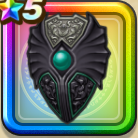

バトルシールド
攻略班 7.0点 / シールドアタックビッグシールド物質系への耐性+5%ギラ属性斬撃・体技ダメージ+2%
くわしい特徴
【レベル別習得スキル】 Lv1シールドアタック（消費MP：4）盾で身を守りつつ敵1体に威力100%の体技ダメージを与えぼうぎょする Lv8きようさ+5 Lv10ビッグシールド（消費MP：7）使用時含む5ターンの間、物理攻撃へのガード率を1段階上げる。最大2段階まで上がり、1段階で25％、2段階で50％ガード率が上昇する。 Lv15ギラ属性斬撃・体技ダメージ+2% Lv18物質系への耐性+5% Lv23守備力+4 Lv25ガード率+1% 【限界突破スキル】 1凸幻惑耐性+5% 2凸ガード率+1% 3凸守備力+5 4凸ガード率+1%